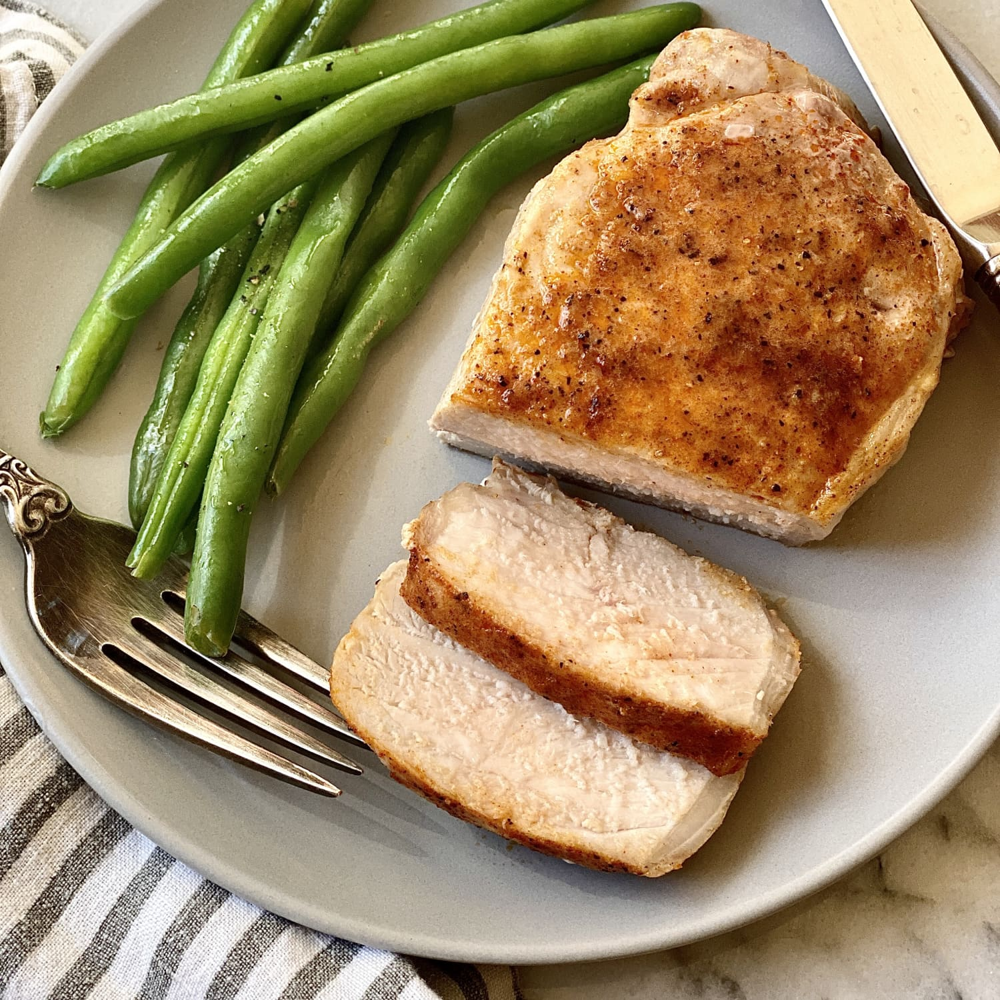

Pork Chops Recipe

Description
Pork chops: the superstar of simple, delicious, and affordable meats.
The tough exterior combined with a juicy, rich interior allows for a satisfying bite each time.
Mix in a bit of butter and you have yourself a 5-star piece of
meal. However, pork chops can't be recklessly handled. It takes careful consideration and prep to
curate the great meat.
In the steps below, I take you through the best process of preparing this glorious meat
Ingredients
- 6 pork chops
- 3 tablespoons olive oil
- 1 1/2 teaspoons salt
- 3/4 teaspoon black pepper
- 3/4 teaspoon garlic powder
- 3/4 teaspoon paprika
- 3/8 teaspoon dried thyme
Steps
- 1.Season the pork chops with salt, black pepper, garlic powder, paprika, and dried thyme. Rub the spices evenly onto both sides of the chops.
- 2.Heat the olive oil in a large skillet over medium-high heat.
- 3.Once the oil is hot, add the seasoned pork chops to the skillet.
- 4.Cook the pork chops in batches if necessary, for about 4-5 minutes on each side until they are browned and cooked through. The internal temperature should reach 145°F (63°C).
- 5. Remove the pork chops from the skillet and let them rest for a few minutes before serving.
Remember to adjust the cooking time as needed depending on the thickness of the pork chops. Enjoy your meal!